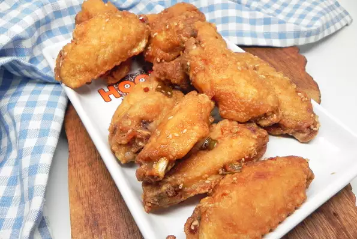

Hawaiian Wings

Description
Sticky, crunchy, garlicky, intensely-flavored, Hawaiian chicken wings. Garnish with additional green onion slices or green onion curls, if desired.
Ingredients
Fillings
- ¾ cup soy sauce
- ⅓ cup white sugar
- 4 green onions, chopped
- 3 cloves galic, minced
- 2 tablespoons toasted sesame seeds
- 2 tablespoons rice wine vinegar
- 1 tablespoon sesame oil
- 1 teaspooon red pepper flakes, or more to taste
- ½ lemon, juiced
- 2 pounds small chicken wings
- 1 cup all-purpose flour
- 2 cups coconut oil
Steps
- Combine soy sauce, sugar, green onions, garlic, toasted sesame seeds, rice vinegar, sesame oil, red pepper flakes, and lemon juice in a small saucepan. Bring to a boil and continue to boil briefly, 2 to 3 minutes. Reduce heat to low and keep warm.
- Pat chicken dry. Place flour in a shallow dish; dip chicken wings into flour, coating thoroughly. Shake off excess and set aside on a plate.
- Heat coconut oil over medium heat in a wok or Dutch oven to 350 degrees F (175 degrees C). Lower 5 to 6 wings one at a time into the hot oil using tongs or a slotted spoon, making sure not to overcrowd or splash hot oil. Cook the wings until browned, crispy, and no longer pink in the centers, 7 to 8 minutes per side.
- Transfer cooked wings to the saucepan using tongs; coat wings in sauce and let soak for 3 to 4 minutes. Continue working in batches until all chicken is fried and soaked in sauce. Transfer sauced wings to a plate to drain excess. Serve hot or at room temperature.